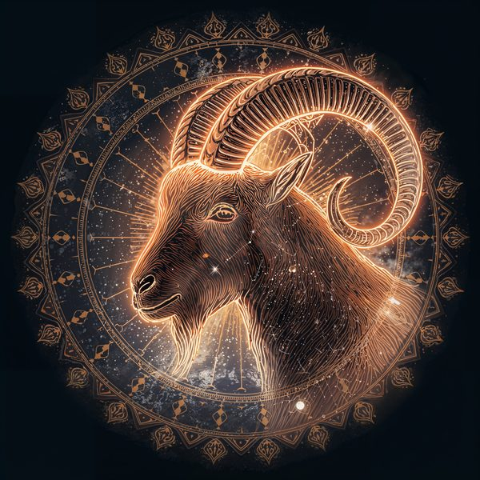
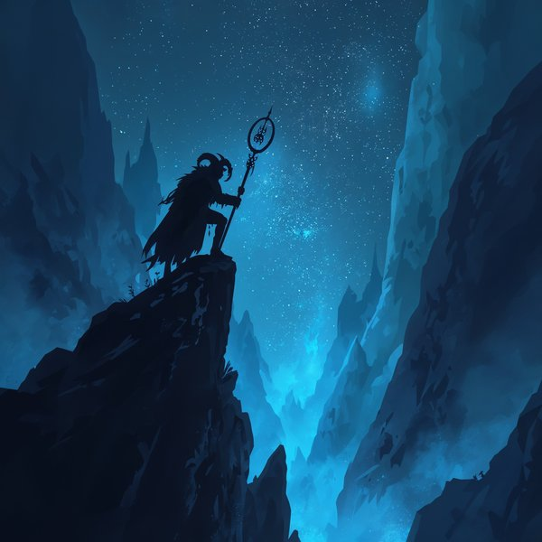
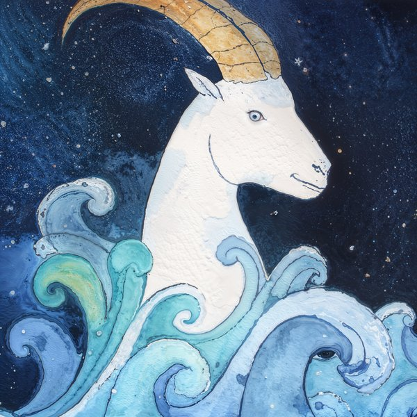
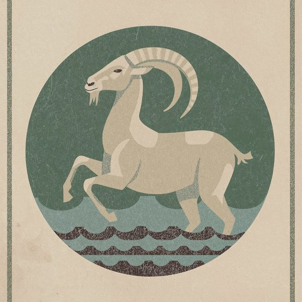
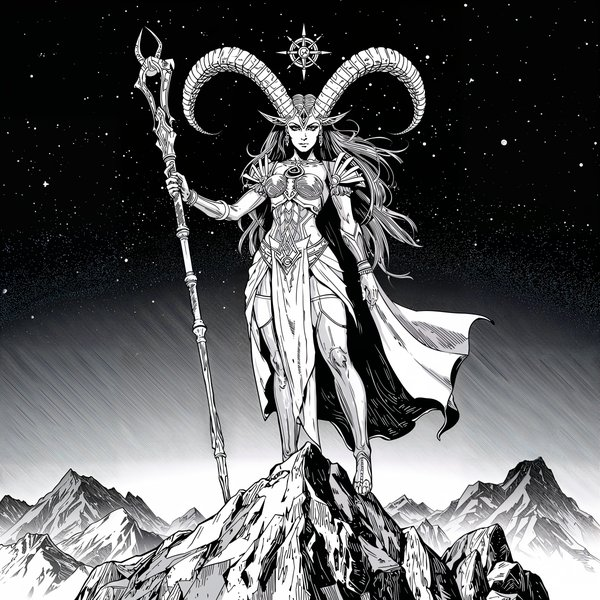
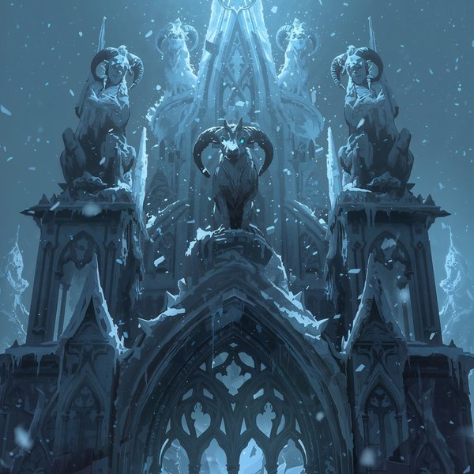
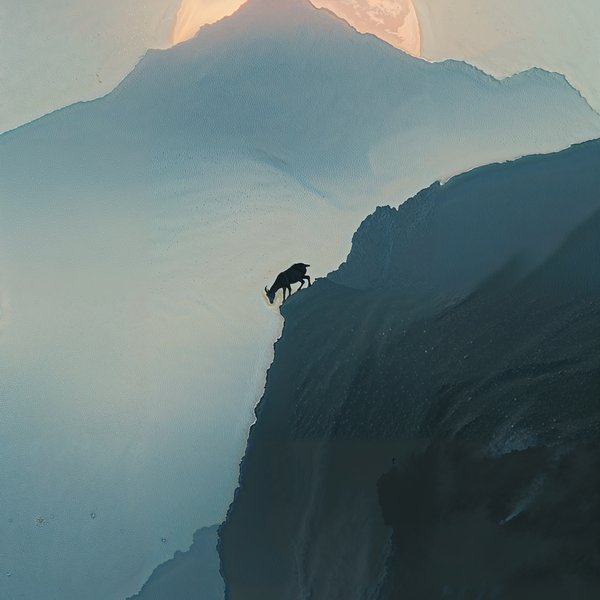
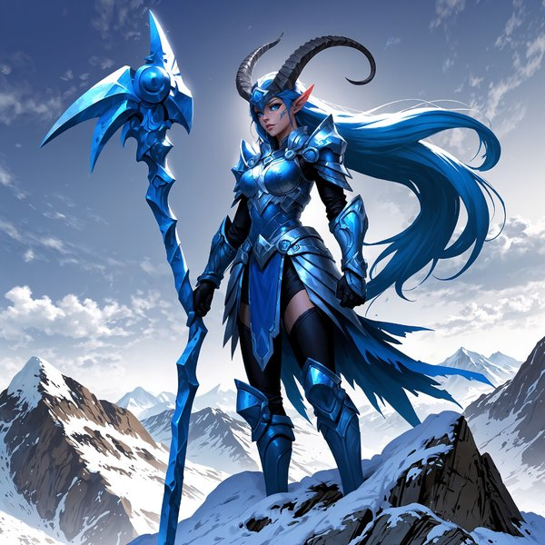

Capricorn Zodiac Art Prints — The Full Collection
The Capricorn zodiac art print collection from Built By Josh Studio includes 16 original digital prints, each designed to capture a different dimension of Capricorn energy. Every piece starts with a creative vision and goes through multiple rounds of refinement before it's considered finished. The collection spans eight distinct art styles — celestial, dark fantasy, watercolor, retro 70s, cyberpunk, gothic horror, minimalist, and anime-inspired illustration.
All prints are available as instant digital downloads from the Built By Josh Studio Etsy shop. Files are high-resolution (up to 6000×9000 pixels) and ready to print at home or at a local print shop. Prices range from $5.99 to $11.99 depending on whether a listing includes a single print or a bundled set.
Built By Josh Studio is a one-person creative studio based in Kansas producing original zodiac digital art across all 12 Western zodiac signs and the Chinese zodiac. Capricorn season (December 22 – January 19) spans the holiday season, making these prints a strong option for Christmas, birthday, and New Year's gifts.
What Makes Capricorn, Capricorn
Capricorn is the tenth sign of the zodiac, spanning December 22 through January 19. It is an earth sign ruled by Saturn — the planet of structure, discipline, and time. Capricorn is represented by the sea-goat, a mythic creature that climbs mountains and navigates depths — a symbol of ambition that operates in both the visible world and the one beneath the surface.
People born under Capricorn are often described as driven, patient, and quietly relentless. They don't chase flashy wins — they build empires stone by stone. Capricorn energy is long-term: it plays the game that takes years, not minutes, and it rarely loses because it never stops working.
That ancient, structural power defines this entire collection. Whether rendered in the stone-carved sacred geometry of the celestial series, the frozen authority of the Frost Demon, or the mountain-peak isolation of the landscape prints — every Capricorn piece is designed to feel like something that was built to outlast everything around it.
Capricorn Art Print Styles — Find Your Version
Every Capricorn in this collection carries the same unyielding ambition, but no two prints express it the same way. Here's what's available across the full range of styles.

Celestial Collection
The signature Built By Josh Studio style. Deep earth tones, obsidian, and antiqued gold with sacred geometry that feels carved from stone rather than drawn. This is celestial Capricorn wall art at its most monumental — the sea-goat rendered in cosmic detail with Saturn symbolism and geological depth. The original series that anchors the zodiac catalog with the weight Capricorn demands.

Dark Fantasy Series
Hyper-realistic and monolithic. These dark fantasy Capricorn art prints feature mountain-born titans, stone-armored guardians, and frozen thrones at the peak of impossible summits. Designed for anyone who wants their Capricorn wall art to feel like the view from the top — earned, permanent, and alone.

Watercolor Prints
Earthy and composed. These watercolor Capricorn zodiac prints use slate, moss green, and muted gold washes with a controlled fluidity that mirrors the sign's disciplined nature. Nothing spills where it shouldn't. Perfect for home offices, studies, and spaces that benefit from grounded, sophisticated energy.

Vintage Posters
Classic vintage poster aesthetic. Earth-and-stone palette, printed-poster texture, and the grounded authority of a historic civic engraving. This vintage poster Capricorn zodiac print has the stately weight and enduring quality of an archival wall plate.

Cyberpunk Edition
The sea-goat rendered through industrial circuitry and cold neon precision. Cyberpunk Capricorn zodiac art for the sign that builds systems — now visualized as one. Steel, data, and calculated ambition translated into electric blue and metallic palettes. For spaces that value structure as much as Capricorn does.

Gothic Horror
The Frost Demon. A frozen peak, a throne of ice, and a Capricorn that has outlived everything that once stood beside it. Gothic horror Capricorn wall decor that takes the sign's relationship with time, isolation, and authority to its coldest, most atmospheric extreme. Wall art for someone who understands that reaching the top means leaving everything else behind.

Minimalist Line Art
Mountain geometry, horn silhouettes, and nothing wasted. The sea-goat reduced to its structural essence — peak, climb, summit. Minimalist Capricorn wall art for contemporary spaces, executive offices, and anyone who wants their sign rendered with the same economy of effort that Capricorn applies to everything.

Anime / Illustrated
An armored mountain guardian rendered in dynamic Japanese-inspired illustration with stone textures and glacial determination. Anime Capricorn zodiac art for collectors and fans of illustrated wall prints who want their sign channeled through a character that embodies patience, power, and the long climb.
Who Buys Capricorn Zodiac Art
This collection is for people who take their goals seriously — and want wall art with the same structural integrity.
- Capricorn (December 22 – January 19) looking for zodiac wall art that reflects their discipline, ambition, and quiet authority — not a cartoon goat or a generic mountain graphic
- Anyone shopping for a Capricorn birthday or Christmas gift who wants something substantial, lasting, and visually commanding — a Capricorn gift idea that respects the sign's standards
- Holiday shoppers looking for a meaningful December/January gift — Capricorn season spans Christmas and New Year's, making zodiac art a personal alternative to generic holiday presents
- Astrology enthusiasts building a zodiac gallery wall across multiple signs and visual styles
- Interior decorators and design-conscious buyers looking for dark, earthy, structural wall art with mountain energy and monumental presence
- Dark fantasy and gothic art collectors drawn to the Frost Demon and the stone-armored titan aesthetic
- Earth sign fans (Taurus, Virgo, Capricorn) who gravitate toward art that feels grounded, permanent, and built with intention
What's Included With Every Capricorn Art Print
Every listing in the Capricorn collection is a digital download. After purchase on Etsy, you get instant access to high-resolution image files — no shipping, no waiting, no physical product mailed to you.
Files are sized at up to 6000×9000 pixels, which means they print cleanly and sharply at standard frame sizes including 5×7, 8×10, 11×14, 16×20, and even larger formats depending on your printer. There is no pixelation or quality loss at these sizes.
Some listings include multiple art pieces bundled together as a set, which is why prices range from $5.99 to $11.99. Single-print listings are at the lower end; multi-print bundles are at the higher end.
All prints are designed to look good on a wall — not just on a screen. The color depth, contrast, and detail are optimized for physical printing.
Visit the Etsy shop for the most up-to-date pricing, sales, and discounts.